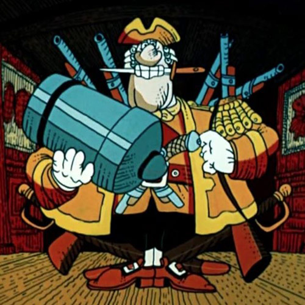

История Черепка и соседних групп,
записанная со слов Боцмана и по обрывкам бортового журнала. По просьбе выживших, реальные имена были изменены, остальное рассказано, как есть.
 Кэп
Черепок 1.0.
2015-10
Черепок основан около 26 октября Кэпом.
2015-11
Почти сразу группа расширена до 50.
В группу вступают Старпомыч и Субарыч.
В группу вступает Боцман.
Отважно играется Разгул или около того.
2015-12
Играется очень сложный Чарльстон.
В группе появляются Нолич, Поварыч, Англыч, Арганыч, Доберманыч.
Формируется офицерский состав Черепка.
Оперы как штык запускаются в 19:00, всегда пишутся заметки.
В заметках всем указывается снимать ракетницы, но мало кто слушается.
Также в группе появляется Стоматолог и сразу становится звездой Черепка. Но его горячие надежды на повышение так и останутся тщетными.
Боцман в споре проигрывает Ноличу почку.
В группу вступает Гендольф (в то время 50-какого-то уровня) и изъявляет желание отдохнуть от трудов праведных.
Гендольф показывает зуководство на бусте, у всей группы челюсти падают на пол.
2016-01
Интела в группе куры не клюют, поэтому при поддержке Гендольфа и его приятеля танкиста Адыча берутся оперы сложнее.
Гендольф снова уплывает за море.
Черепок достигает 5000 очков и переходит на Твердость.
На полях сражений разворачиваются танковые бои против бумов. Многие помнят танкиста Гольфыча.
Руководство группы как зеницу ока бережет Интельную Подушку.
В группу вступает Старыч.
2016-02
В группе появляются вестники топа - Убыч и Вамыч.
Убыч рассказывает всем, что два года со своей группой стремится в топ, и что вершина вот-вот будет достигнута, и тогда уж он окончательно уйдет на покой.
Наступают золотые времена ночных черепковских флудов. Особенно легендарны дальние заплывы флудмастера Доберманыча.
Происходит памятный случай, когда супружница Старпомыча, переодевшись им, врывается на борт и требует исключить его из группы.
Черепок 1.0 достигает своего максимума в 6994 очка.
Кэп жалуется, что устал от попыток контролировать танкистов, солянщиков и слепоглухонемых и предлагает что-то менять.
Большей частью офицерского состава поддерживается идея создать новую группу.
В процессе переговоров к затее присоединяется Гендольф, отказываясь возвращаться в Черепок, но соглашаясь на светлое будущее в новой группе на 25.
Убыч отговаривает и убеждает, что долго живут только группы на 50.
13 февраля основывается группа Ы на 25, и основной состав тайно переходит туда.
Черепок 1.1.
2016-02
Поварыч и Доберманыч, как противники переселения, несморя на все уговоры, остаются в Черепке.
Общим голосованием Стоматолог не принимается в Ы.
Стоматолог с горя создаёт свой собственный Черепок, но тот живёт недолго.
В Ы становится популярным тороводство.
2016-03
Гендольф собирает супер-бандуру из трёх планшетов.
Убыч становится управляющим Черепка и безуспешно пытается внедрять прогрессивные методы руководства.
В Ы продолжается брожение умов, как лучше играть, на 50 или на 25.
Боцман разрушает последнюю зелёнку у себя на острове, но начинает увлекаться фермерством на досуге.
На неустановленной почве обостряется конфликт между Арганычем и Доберманычем.
Кэп слагает с себя обязанности лидера, Старпомыч становится первым социалистическим вождем Ы.
В конце месяца, после "скандала с Твердостью" и других эксцессов, Боцман в знак протеста сдает партбилет, уходит в свободное плавание и месяц скитается по группам.
Черепок 1.2.
2016-04
Примерно в это время Ы расширяется до 50, весь актив Черепка вливается в Ы.
Лидером в Черепке остается играть Шейку молчаливый и никому не известный Зэпыч.
Убыч назначается главным управляющим Ы для внедрения прогрессивных методов руководства.
Ы играет Трутницу.
В конце месяца Боцман возвращается в Ы и офигевает от авторитарного режыма.
Разгорается скандал из-за предполагаемого ухода некоторых игроков в топ на 5.
Вскоре Убыч решает, что ему не интересно играть с теми, кто во всем разбирается лучше него и уходит бросать игру.
2016-05
Благодаря нескольким мощным горозукерам и отряду тороводов, Ы играет Фокс и вскоре переходит на Бастион.
Протестуя против отсутствия цензузы и распущенных нравов, из Ы уходит Старыч.
Примерно в это время Старпомыч в шкуре Доныча, старого приятеля Гендольфа, устраивается в топ-группу Убыча.
Убыч и Старыч на время оседают в тихой группе Интарь.
Примерно в это время укрепляется славная традиция Пятничных Срачей.
Недовольный рвением команды и незакрытием оперы с 19 до 24, Гендольф периодически покидает и снова возвращается в Ы.
2016-06
В Ы появляется синьорина Купанта.
Старык временно возвращается в Ы.
Происходит памятный казус с мертвым лидером Адычем.
При участии Купанты разгораются особенно горячие срачи по поводу цензурной политики группы.
Не выдержав душевных страданий, в начале месяца Ы окончательно покидают Кэп, Боцман и Старыч.
Некоторое время Кэп и Боцман мыкаются по группам, а потом, во второй половине месяца, решают заняться возрождением Черепка.
К новому черепковскому замыслу присоединяется Старыч.
С Зэпычем проводятся переговоры о возвращении лидера Кэпу, и в 20-х числах июня Черепок 2.0 запускается!
Черепок 2.0.
2016-06
К концу месяца Черепок 2.0 достигает 1000 очков.
Группа постепенно избавляется от мертвых душ и набирает обороты.
По рекламе в Черепок приходит Ливыч. В группу вступает Басыч, мадам Жела и другие персонажи.
Возвращается Ортыч, игравший в Черепке полгода назад.
2016-07
В Черепке появляется мадмуазель Клумба, поначалу очень неразговорчивая.
Из Ы в Черепок переходят Субарыч и Дедыч.
Боцман считает своё мнение приоритетным, растет непонимание между ним и Старычем.
Вскоре Старыч со скандалом уходит из Черепка.
В Ы происходят скандалы на фоне того, что крепнет влияние Убыча, пропагандирующего свою топ-группу.
В конце месяца от Ы отпочковывается Ы2 на 25, куда переходят все амбициозные и перспективные.
В Ы остаётся расслабляться Поварыч, группа постепенно проседает ниже 10000 очков.
2016-08
В начале месяца Черепок достигает 5000 очков.
Клумба повышается до офицера и назначается на должность заведующей отделом кадров.
Примерно в это время в группе появляется молчаливый Котыч и мадмуазель Эра.
В середине месяца доходят слухи, что Старыч основал свою группу Союзники.
В Черепке начинаются проблемы с интелом.
Боцман падает духом и подумывает уйти на покой и податься в фермеры.
2016-09
В начале месяца Кэп говорит "яусталъяухожу" и уходит в Ы2 играть сложные операции.
Черепок остаётся без руководства, и принимается решение всей компанией переселиться под крыло Старыча в Союзники.
Черепок 2.1.
2016-09
В Черепке остаются Зэпыч (в звании лидера) и Котыч.
Будучи в опоозиции к методам руководства Старыча, Боцман с треском изгоняется из Союзников и на месяц уходит в глухой оффлайн.
2016-10
Из Ы2 все переходят в Ы, происходит торжественное объединение и падение Ынской стены.
Убыч становится лидером и провозглашает "ребрендинг Ы" и движение к новым высотам и целям.
Вернувшись из оффлайна, Боцман обнаруживает, что Союзники закрыты, Старыч пропал без вести, а вся черепковская компания в сборе играет в новой группе Ронины (включая Кэпа в лидерах). Боцман присоединяется к Ронинам.
Между тем, Черепок под руководством Котыча начинает подниматься после кризиса.
В Черепке появляется мадмуазель З.А.
27 октября Ронины достигают 7777 очков. Однако, в группе начинаются проблемы с интелом.
2016-11
Принимается решение закрыть группу, и Ронины отправляются в свободное плавание.
Случайно выйдя на Старыча, Ронины присоединяются к нему в группе Сфронт.
Старыч вскоре уходит из Сфронта.
На досуге Боцман всё больше увлекается фермерством, и в этом воплощении вступает в группу Клонов.
После того, как её освобождают от звания соруководителя, Клумба разворачивает в Сфронте диссидентскую борьбу за правду. Обстановка в Сфронте накаляется.
Нолич уходит из Ы и завязывает с игрой.
2016-12
Боцман открывает фермерский филиал в Черепке (в виде Барыгыча).
В связи с засильем в Сфронте танкизма, Ронины принимают тайное решение сменить группу.
Ронины переселяются в подающую надежды группу Декабрьск, где играется Стратегическая Точка.
Сфронтовцы винят в заговоре Клумбу.
Между тем, Котыч, параллельно с руководством в Черепке, повышает квалификацию в Сфронте и Ы.
В Черепок с рекламным предложением объединиться заглядывает Чёрныч (безрезультатно).
Из-за особой снисходительности руководства к нему, Барыгыч вызывает в Черепке толки и пересуды.
В Черепок неожиданно возвращается Англыч, ветеран Черепка 1.0, летом игравший в Ы2.
В Черепок иногда заглядывают некоторые из Ронинов, например, Антонио, Клумба и Дедыч.
Черепок достигает 7143 очков.
Англыч подбивает черепковское руководство в погоне за лучшей жизнью сделать новую группу на 25.
Черепок 2.2.
2017-01
Черепковцами создаётся группа Котэ на 25 (лидер - Зэпыч), актив постепенно переселяется туда, Черепок в очередной раз постигает запустение.
Примерно в это время Ы достигает максимума в 24550 очков.
Ронины продолжают играть в Декабрьске, но ряды их редеют, некоторые уходят в отставку.
Боцман, побывав на Печке, покидает Декабрьск и окончательно подаётся в фермеры, подхалтуривая в Клонах по вечерам.
Примерно в это время навсегда покидает пляжные просторы Кэп.
2017-02
Барыгыч заселяется в Котэ.
Декабрьск лихорадят срачи.
Клумбу до сих пор не могут забыть в Сфронте.
Между тем, в Котэ ненадолго заглядывает Гендольф.
Гендольф приглашает Сквайрыча, как человека с твёрдым боевым духом, в Ы на тупик, но тот не соглашается.
В Декабрьске руководство подозревает Клумбу в планировании очередного исхода Ронинов в неустановленную группу.
Особый статус Барыгыча и назначение его соруководителем вызывают раскол среди соруков Котэ, Сквайрыч со скандалом уходит из группы.
2017-03
Клумба всё больше времени проводит в Ы.
В Котэ вступает Бертыч и сразу же клеймит Барыгыча предателем Родины.
Ронины окончательно разбредаются по разным пляжам. В Декабрьске остаётся только Икыч.
Примерно в это время вместо Декабрьска создаётся группа Мега на 25.
Мегу продолжает терроризировать Неуловимый Джо Н., проклятье Декабрьска.
2017-04
Примерно в это время З.А. уходит из Котэ путешествовать.
Боцман, устав от фермерских скитаний и заскучав без свершений, возвращается в Черепок с твёрдым намерением играть Пташку, а может быть даже и Шейку.
Черепок 3.0.
2017-04
Боцман договаривается с Зэпычем о передаче полных полномочий, и 17 апреля начинается Черепок 3.0!
Между тем, в середине месяца Клумба временно назначается и. о. лидера Ы, что по неустановленным причинам приводит к масштабному политическому кризису.
Создается группа Зубки на 25, куда переходят многие стахановцы из Ы.
Лидером Ы становится Дедыч, Ы приходит в относительный упадок.
Боцман коротает дни в Черепке почти один-одинёшенек.
В Черепок неожиданно заглядывает в гости Старыч и немного помогает с интелом.
2017-05
Черепок набирает обороты. В группу возвращается Клумба.
Из дружественного Котэ на подмогу приходят клоны Котыча и Бертыча.
Арганыч выходит на пенсию и оседает в Черепке.
В группу вступает Эшич, и вскоре за успехи на пляжном фронте назначается офицером.
В группу возвращается Гендольф, но вскоре изгоняется за неполиткорректность.
2017-06
К началу июня Черепок играет Мамбу.
В группе ненадолго появляется Гейралисимус и оживляет обстановку.
Эшича понижают за пренебрежение офицерской честью.
Немногочисленный состав Котэ переселяется в группу Москва. Котыч окончательно перемещается в Черепок, вместе с ним приходят еще несколько игроков.
В конце месяца в группу возвращается З.А.
Черепок играет Виноград.
В Ы продолжается летнее запустение.
Примерно в это время в Черепок возвращается Гендольф и получает амнистию.
2017-07
В черпке появляются такие представители подрастающего поколения, как Диаблыч, Босыч и Лосыч.
В Ы возвращается старый игрок Лексыч и предпринимает самоотверженную попытку реанимации и реставрации, которая проваливается.
Черепок играет Трутницу и Фокстрот.
В группе ненадолго зависает Накуренный Паучок с Молью Богатырской.
2017-08
Диаблыча так и не повышают.
На начало месяца Черепок достигает 12.000 очков.
Маркетинговый отдел Черепка разрабатывает и запускает рекламную кампанию.
В группу вступает Чёрныч и утверждает, что помнит Ронинов по Декабрьску, но его никто не припоминает.
Новоиспеченный офицер Тоныч, несмотря на запреты руководства, с позором кикает Чёрныча за зеленку, за что, в свою очередь, отправляется в неоплачиваемый отпуск.
Чёрныч на особых правах восстанавливается в Черепке.
Черепок набирает популярность как один из лучших санаториев для поводырей зук, дела резко идут в гору, на постоянной основе играется Бастион и выше.
В группу вступает Фрагмыч и выходит без атаки.
В Черепке появляется Дорыч и сразу наставляет всех на путь истинный.
На фоне попыток играть Тревожный Звоночек социально-политическая обстановка в Черепке накаляется.
Дорыч продвигает идею "Дня Икс".
В группе появляется Седыч.
Дорычу с лёгкой руки руководства выдаётся карт-бланш на реализацию "Дня Икс", и 31 августа в Черепке первый раз играется и закрывается Глубокий Порез.
Дорыч за разжыгание отправляется в бессрочную политическую ссылку без права возвращения.
2017-09
Дорыч из-за границы передаёт привет всем, кто не поддержал его кик.
последняя редакция: 12.02.2018